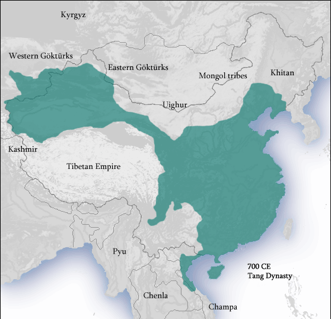

The Tang dynasty (/tɑːŋ/,[3] [tʰǎŋ]; Chinese: 唐朝[a]), or Tang Empire, was an imperial dynasty of China that ruled from 618 to 907 AD, with an interregnum between 690 and 705.
It was preceded by the Sui dynasty and followed by the Five Dynasties and Ten Kingdoms period.
Historians generally regard the Tang as a high point in Chinese civilization, and a golden age of cosmopolitan culture.[5] Tang territory, acquired through the military campaigns of its early rulers, rivaled that of the Han dynasty.
The Lǐ family (李) founded the dynasty, seizing power during the decline and collapse of the Sui Empire and inaugurating a period of progress and stability in the first half of the dynasty's rule. The dynasty was formally interrupted during 690–705 when Empress Wu Zetian seized the throne, proclaiming the Wu Zhou dynasty and becoming the only legitimate Chinese empress regnant. The devastating An Lushan Rebellion (755–763) shook the nation and led to the decline of central authority in the dynasty's latter half. Like the previous Sui dynasty, the Tang maintained a civil-service system by recruiting scholar-officials through standardized examinations and recommendations to office. The rise of regional military governors known as jiedushi during the 9th century undermined this civil order. The dynasty and central government went into decline by the latter half of the 9th century; agrarian rebellions resulted in mass population loss and displacement, widespread poverty, and further government dysfunction that ultimately ended the dynasty in 907.

Li Long Ji
y the year 737, Emperor Xuanzong discarded the policy of conscripting soldiers that were replaced every three years, replacing them with long-service soldiers who were more battle-hardened and efficient. It was more economically feasible as well, since training new recruits and sending them out to the frontier every three years drained the treasury.
By the late 7th century, the fubing troops began abandoning military service and the homes provided to them in the equal-field system.